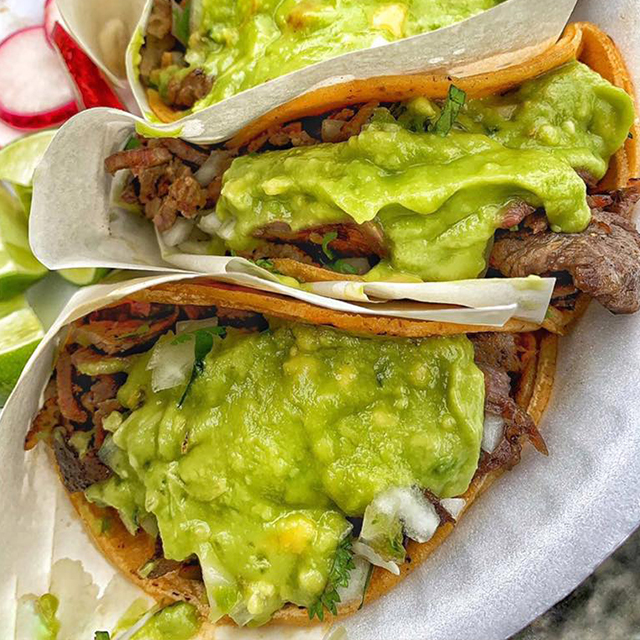

Bronco Tacos
Home

Tacos filled with a juicy mix of beef and longaniza, topped with fresh cilantro, crisp onions, and a generous layer of creamy guacamole. Every bite is bold, rich, and absolutely irresistible.
Ingredients
- Tortillas (Consider 2 for each taco)
- 500kg of beef for grilling
- 300gr of longaniza
- Cilantro
- 2 Avocados
- Half an onion
- Lemon
- Salt
- 1/4 Cup of milk
How to cook
- Cut the beef and longaniza into small pieces. Put them in a pan and cook until browned. Salt to taste.
- Cut the onion and cilantro finely, separate some for later Mash the avocados and mix with lemon juice, salt, and the chopped onion and cilantro to make guacamole. Add the milk to the mix
- Grill the tortillas until warm and slightly charred in the same pan where you prepared the meat so they absorb the flavors.
- Serve the meat. Top with the guacamole, the remaining chopped onion and cilantro.